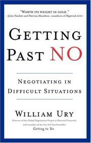
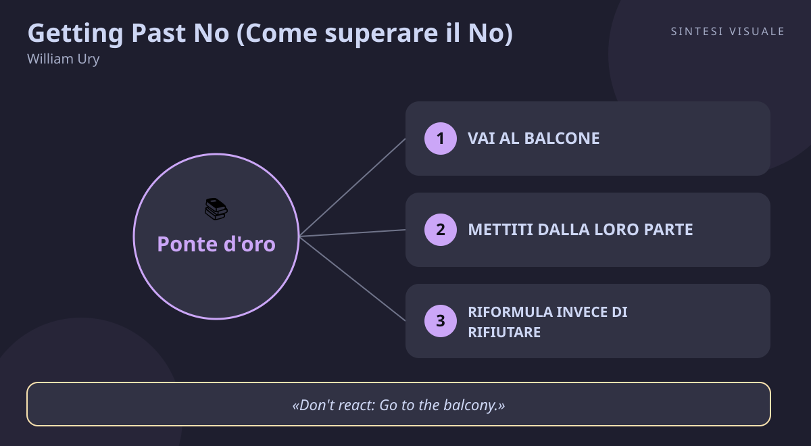

Home / Libri / Getting Past No (Come superare il No)

Getting Past No (Come superare il No)
William Ury · Negoziazione
«Getting Past No (Come superare il No)»
- Vai al balcone
- Mettiti dalla loro parte
- Riformula
- Ponte d'oro
🧭Introduzione
William Ury è uno dei negoziatori più noti al mondo: ricercatore del Program on Negotiation della Harvard Law School, ha mediato in conflitti aziendali, scioperi e trattative internazionali, ed è il coautore — insieme a Roger Fisher — del celeberrimo Getting to Yes (L'arte del negoziato, 1981), il libro di negoziazione più venduto di sempre. Getting Past No, pubblicato nel 1991 da Bantam Books (edizione riveduta nel 1993 e nel 2007), ne è il seguito naturale e risponde alla domanda che ogni lettore si era posto: e se l'altra parte non vuole collaborare? Se alza muri di gomma, attacca o bara?
Perché questo libro conta oggi: nella vita reale quasi nessuno negozia "da manuale": il cliente spara un prezzo impossibile e non si muove, il capo dice "prendere o lasciare", il collega fa ostruzionismo, l'ex coniuge o l'adolescente in casa rispondono solo con dei no. Getting to Yes spiega come raggiungere un accordo; Getting Past No spiega come arrivarci quando l'altro rema contro. È il libro che trasforma un avversario in un partner di trattativa — senza cedere e senza litigare.
A chi è utile: a venditori e commerciali che trattano con clienti duri; a manager e professionisti che negoziano stipendi, contratti e scadenze; a genitori, partner e chiunque debba gestire conversazioni tese con persone che sembrano irraggiungibili.
📘Riassunto
La scintilla centrale: quando l'altra parte dice no, attacca o fa il muro, l'istinto ci spinge in tre trappole — contrattaccare, cedere o rompere tutto. Ury propone una terza via: la strategia della svolta (breakthrough strategy), un metodo in cinque passi per aggirare la resistenza invece di scontrarcisi contro, così che basta una sola persona per sbloccare una trattativa, anche se servono due persone per impantanarla.
La struttura logica segue le cinque barriere alla cooperazione, ciascuna con la sua contromossa:
- La tua reazione — quando vieni attaccato rischi di reagire d'istinto: la risposta è salire sul balcone, cioè sospendere la reazione e riprendere lucidità.
- Le loro emozioni — rabbia, paura e sospetto avvelenano il tavolo: la risposta è metterti dalla loro parte, ascoltando e riconoscendo le loro ragioni per disinnescarle.
- Le loro posizioni — arroccati su richieste rigide ("prendere o lasciare"), non si muovono: la risposta è riformulare, trasformando le posizioni in problemi da risolvere insieme con domande mirate.
- La loro insoddisfazione — anche convinti, temporeggiano perché l'accordo non li convince: la risposta è costruire un ponte d'oro, rendere facile dire sì coinvolgendoli e salvando la loro faccia.
- Il loro potere — se credono di vincere senza trattare, non si siederanno mai al tavolo: la risposta è usare il potere per educare, mostrare con calma il costo del mancato accordo (la tua BATNA) senza minacciare.
Il punto di svolta: il lettore capisce che non deve controllare l'altro — impresa impossibile — ma solo se stesso. Il "balcone" mentale, la pausa che separa stimolo e risposta, è la mossa più potente di tutto il libro: chi resta lucido mentre l'altro perde le staffe ha già vinto metà trattativa.
L'eredità oggi: insieme a Getting to Yes, è il testo di riferimento del Program on Negotiation di Harvard, insegnato nelle business school e usato da diplomatici, manager e venditori in tutto il mondo. Le sue idee — BATNA, ponte d'oro, "salire sul balcone" — sono entrate nel linguaggio quotidiano della negoziazione, e il metodo è lo stesso che Ury ha applicato in mediazioni internazionali vere, non solo in aula.
💡Concetti chiave
- Vai al balcone: quando vieni provocato, non reagire — sospendi la reazione, prenditi tempo e punta all'obiettivo.
- Mettiti dalla loro parte: disinnesca rabbia e sospetto ascoltando davvero e dando ragione dove puoi.
- Riformula invece di rifiutare: non respingere le posizioni rigide, trasformale in problemi da risolvere con domande.
- Costruisci un ponte d'oro: rendi facile dire sì — coinvolgi l'altro, soddisfa i suoi interessi e salvagli la faccia.
- Usa il potere per educare: avverti delle conseguenze, non minacciare — mostra la tua alternativa e lascia sempre aperta la via dell'accordo.
- Preparati, preparati, preparati: interessi, opzioni, criteri oggettivi e BATNA si studiano prima del tavolo, non al tavolo.
📖1. Vai al balcone
- Definizione il "balcone" è la distanza mentale tra stimolo e risposta: invece di reagire d'istinto a un attacco o a un no secco, ti fermi, riconosci il gioco che l'altro sta facendo (muro, attacco, trucco) e ti prendi tempo per pensare ai tuoi interessi e alla tua alternativa.
- Esempio il cliente sbotta al telefono: "Il vostro prezzo è una rapina, chiudiamo qui". Invece di ribattere offeso o di offrire subito uno sconto nel panico, dici: "Capisco, è una cifra importante — mi prendo un'ora, ricalcolo le voci e ti richiamo con una proposta precisa".
- Come applicarlo impara a conoscere i tuoi "pulsanti caldi" (le frasi che ti fanno esplodere); quando scattano, usa pause, rinvii e timeout — "ne parliamo domani alle 10 con i dati in mano" — e non decidere mai nulla sul momento. Tieni gli occhi sul premio: l'obiettivo, non la rivincita.
- Errore comune credere che rispondere a tono dimostri forza. La controffensiva immediata trasforma la trattativa in una gara di orgoglio dove entrambi perdono; cedere subito per quieto vivere, invece, insegna all'altro che basta alzare la voce per ottenere sconti.
- Collegamento è l'equivalente negoziale del "conta fino a dieci" degli stoici e di Epitteto — non controlli gli eventi, controlli il tuo giudizio — e anticipa il "Sistema 2" di Kahneman (Pensieri lenti e veloci): rallenta e la mente lucida riprende il comando.
📖2. Mettiti dalla loro parte
- Definizione prima di negoziare devi creare un clima favorevole: disinnescare le emozioni negative dell'altro ascoltandolo sul serio, riconoscendo i punti validi delle sue obiezioni e rispettando la sua autorità e competenza — l'opposto di ciò che si aspetta (attacco o resistenza).
- Esempio il tuo capo respinge la richiesta di aumento: "Non è il momento, i budget sono bloccati". Invece di controbattere con le tue ragioni, rispondi: "Hai ragione, i budget sono stretti per tutti — e apprezzo che tu me lo dica chiaramente. Aiutami a capire: quali risultati renderebbero la cosa possibile tra sei mesi?".
- Come applicarlo fai domande aperte, parafrasa ("quindi il problema è la tempistica, non il merito?"), concorda dove puoi senza cedere sul merito e riconosci esplicitamente il ruolo dell'altro. L'ascolto attivo è una mossa strategica, non debolezza.
- Errore comune ascoltare in modo finto mentre si prepara la replica, oppure confondere empatia e accordo — capire le ragioni dell'altro non significa accettare le sue condizioni.
- Collegamento è il "mettersi nei panni dell'altro" di Carnegie (Come trattare gli altri e farseli amici) e il mirroring di Voss (Never Split the Difference): chi si sente ascoltato abbassa le difese e ricomincia a ragionare.
📖3. Riformula invece di rifiutare
- Definizione quando l'altro si arrocca su una posizione ("o così o niente"), respingerla lo fa solo scavare la trincea più profonda. Riformulare significa prendere ciò che dice e restituirlo come un problema condiviso da risolvere, con domande che spostano l'attenzione dagli ultimatum agli interessi: "Perché ti serve proprio quello? Cosa faresti al posto mio? E se provassimo così?".
- Esempio il fornitore: "Consegna in dieci giorni o niente". Invece di dire "impossibile", chiedi: "Cosa succede se sforiamo di qualche giorno? Se ti garantisco l'ordine per tutto l'anno, riusciamo a trovare una finestra?". Il muro diventa un'agenda di lavoro.
- Come applicarlo prepara tre domande-riformulazione prima di ogni incontro ("perché è importante per voi?", "cosa succederebbe se...?", "come lo risolvereste voi?"); aggira i muri invece di sfondarli, devia gli attacchi con calma e smaschera i trucchi nominandoli con garbo ("questa mi sembra una tattica del prendere-o-lasciare: torniamo al problema?").
- Errore comune discutere la posizione ("il tuo prezzo è assurdo") invece di esplorarne le ragioni — si finisce a braccio di ferro sulle cifre mentre i veri interessi (tempi, garanzie, prestigio) restano invisibili.
- Collegamento è il cuore del metodo di Getting to Yes (Fisher e Ury): dagli interessi, non dalle posizioni, nascono le soluzioni — e richiama le domande calibrate di Voss e il "terzo lato" delle Conversazioni difficili.
📖4. Costruisci un ponte d'oro
- Definizione quando l'altro esita — perché l'idea non è sua, perché teme di perdere la faccia o perché tutto va troppo in fretta — spingere lo irrigidisce. Il ponte d'oro è rendere l'accordo facile e onorevole: coinvolgerlo nella soluzione, incorporare le sue idee, soddisfare i suoi interessi nascosti (soprattutto i bisogni umani di base: riconoscimento, sicurezza, autonomia) e aiutarlo a raccontare l'esito come una sua vittoria.
- Esempio il cliente dice "devo pensarci" dopo una lunga trattativa. Invece di pressarlo con lo sconto a scadenza, gli proponi: "Scegli tu tra queste due formule — e preparo io una sintesi di una pagina che puoi mostrare al tuo socio come base della tua decisione". Torna con il sì perché può presentarlo come merito suo.
- Come applicarlo chiedi critiche costruttive ("cosa dovrei cambiare perché questa proposta funzioni per voi?"), offri scelte invece di ultimatum, vai piano per andare forte — non correre al traguardo — e scrivi tu la sua "dichiarazione di vittoria".
- Errore comune presentare l'accordo come una sconfitta dell'altro ("alla fine hai capito che avevo ragione") o affrettare la chiusura: umiliare chi firma significa preparare ritorsioni, inadempienze e rotture future.
- Collegamento è la "prova sociale e coerenza" di Cialdini (Le armi della persuasione) applicata al tavolo: le persone mantengono gli accordi che sentono propri — e richiama Sun Tzu, il maestro citato da Ury: all'avversario va sempre lasciata una via d'uscita onorevole.
📖5. Usa il potere per educare
- Definizione se l'altro crede di poter vincere senza trattare, devi istruirlo sui costi del mancato accordo — non con minacce, che provocano ritorsioni, ma con avvertimenti calmi, domande di realtà ("cosa pensi che farò? e tu cosa farai?") e la dimostrazione concreta della tua BATNA (la migliore alternativa all'accordo), usata solo se serve e con moderazione, rassicurando che l'obiettivo è la soddisfazione reciproca.
- Esempio il locatore rifiuta qualsiasi trattativa sul canone. Gli dici: "Preferirei restare, ma ho già un locale alternativo a queste condizioni — ti mostro il preventivo. Se non troviamo un punto d'incontro entro venerdì, purtroppo dovrò firmare lì. Ma la mia prima scelta resta questo immobile: troviamo una cifra che funzioni per entrambi?".
- Come applicarlo sviluppa davvero la tua alternativa prima di negoziare (senza BATNA non hai potere reale); fai domande che costringano l'altro a calcolare le conseguenze; se serve, usa una terza parte per fermare gli attacchi; e ricorda sempre che il ponte d'oro resta aperto — l'altro deve poter scegliere l'accordo, non subirlo.
- Errore comune scambiare il potere per intimidazione — ultimatum urlati e minacce spingono l'altro in un angolo, dove l'unica mossa rimasta è colpirti. Il potere usato per schiacciare vince la battaglia e perde la relazione (e spesso l'accordo stesso).
- Collegamento è la BATNA di Getting to Yes portata sul campo di battaglia, e il gemello buono della "tensione costruttiva" del Challenger Sale: la pressione serve a far ragionare, non a far cedere.
📖6. Preparati, preparati, preparati
- Definizione Ury lo ripete tre volte perché è la mossa più trascurata: prima di sederti al tavolo mappa gli interessi di entrambe le parti, elabora opzioni creative, raccogli criteri oggettivi (precedenti, prezzi di mercato, standard) e costruisci la tua BATNA — oltre a chiarire a te stesso cosa desideri, di cosa ti accontenteresti e con cosa potresti convivere.
- Esempio prima del colloquio per lo stipendio, raccogli i range di mercato per il tuo ruolo, elenchi tre opzioni oltre ai soldi (smart working, formazione, bonus legato a obiettivi) e tieni pronta un'offerta alternativa reale. Al tavolo non improvvisi nulla: scegli.
- Come applicarlo per ogni trattativa importante compila una scheda di una pagina — i miei interessi, i loro probabili interessi, tre opzioni, due criteri oggettivi, la mia BATNA e la loro probabile. Ripassala sul "balcone" ogni volta che la tensione sale.
- Errore comune presentarsi al tavolo conoscendo solo ciò che si vuole, senza alternative e senza criteri: senza BATNA ogni "no" dell'altro è un ricatto, e senza criteri ogni cifra è un'opinione che si scontra con un'altra opinione.
- Collegamento è la stessa disciplina del Deep Work di Newport applicata alle persone (il lavoro vero avviene prima, in silenzio) e della preparazione SPIN di Rackham: le trattative si vincono prima di cominciarle.
💬Citazioni da ricordare
"Don't react: Go to the balcony." — Non reagire: sali sul balcone. Conta perché condensa l'intero libro in cinque parole: la prima mossa non è contro l'altro, è contro il tuo stesso istinto.
"Don't push: Build them a golden bridge." — Non spingere: costruisci loro un ponte d'oro. Conta perché rovescia l'istinto del negoziatore duro: la fermezza sta nel rendere facile l'accordo, non nel renderlo inevitabile.
"Warn, don't threaten." — Avverti, non minacciare. Conta perché è il confine tra potere legittimo e bullismo: la stessa conseguenza, detta come avvertimento rispettoso invece che come minaccia, educa invece di provocare.
Basta una sola persona per sbloccare una trattativa, anche se servono due persone per impantanarla: non puoi controllare l'altro, ma puoi sempre controllare la tua prossima mossa. E l'accordo migliore è quello che l'altro può raccontare come una sua vittoria: chi salva la faccia oggi, onora il contratto domani.
🌍Esempi di oggi
- Il cliente che chiede lo sconto impossibile — "O mi fai il 30% o vado dal concorrente". Il venditore che conosce Ury non cede né litiga: sale sul balcone ("ti richiamo tra un'ora con i conti in mano"), si mette dalla sua parte ("hai ragione a guardare i costi"), riformula ("cosa deve includere l'offerta per stare nel tuo budget?") e costruisce il ponte d'oro con due formule tra cui scegliere.
- La richiesta di aumento respinta — Il capo dice "non se ne parla". Invece di minacciare le dimissioni o ingoiare il rospo, il dipendente disinnesca ("capisco i vincoli di budget"), chiede cosa renderebbe possibile l'aumento tra sei mesi e prepara intanto la sua BATNA: un'offerta alternativa reale che trasforma la richiesta in una scelta ragionata per entrambi.
- La lite in famiglia sull'auto del figlio — "Tutti i miei amici la usano, tu non capisci niente!". Il genitore evita lo scontro frontale: ascolta senza interrompere, riformula con domande ("cosa ti serve davvero: autonomia o fare come gli altri?"), poi propone un ponte d'oro — uso concordato con regole scritte dal figlio stesso — e avverte con calma sulle conseguenze invece di minacciare punizioni.
🛠️Azioni pratiche
- Individua i tuoi pulsanti caldi: scrivi le tre frasi che nelle trattative ti fanno perdere la calma (il prezzo contestato, il "prendere o lasciare", l'interruzione). Accanto a ciascuna, scrivi la tua mossa-balcone già pronta: una frase per prendere tempo senza subire.
- Prepara la prossima trattativa su una pagina: per un negoziato reale che hai in agenda (cliente, capo, fornitore, affitto), compila la scheda — i tuoi interessi, i loro probabili interessi, tre opzioni, un criterio oggettivo, la tua BATNA. Portala con te.
- Costruisci un ponte d'oro in una trattativa aperta: prendi una discussione ferma da giorni e fai una mossa di avvicinamento — una domanda di riformulazione, una critica costruttiva chiesta all'altro o una scelta tra due opzioni invece di un ultimatum. Osserva cosa cambia.
💎Da portare a casa
Non vincere contro l'altro: vinci con l'altro — la trattativa più forte è quella in cui riusciresti a perdere con dignità e lui a vincere senza umiliarti.
Vuoi approfondire? Rispondi in chat con il numero del concetto (1–6) che vuoi esplorare — balcone, ascolto strategico, riformulazione, ponte d'oro, potere gentile o preparazione — oppure chiedimi come applicare il metodo a una tua trattativa reale: cliente difficile, aumento di stipendio, fornitore o discussione in famiglia.
🖼️In un colpo d’occhio

Tocca l’immagine per ingrandirla.